건축설비기사 (2009-05-10 기출문제)
1과목: 건축일반
1. 극한강도설계법에서 적용되는 강도감소계수(ø)에 대한 설명 중 옳지 않은 것은?
- 설계 및 시공상의 오차를 고려한 것이다.
- 구조 재료의 강도오차를 고려한 것이다.;
- 응력 계산시의 오차를 고려한 것이다.
- 하중의 불확실성을 고려한 것이다.
(정답률: 69%)

2. 리조트 호텔(Resor hotel)은 각종 관광지에서 관광객을 숙박대상으로 삼고 있는데 그 종류에 해당되지 않는 것은?
- 해변호텔(Beach hotel)
- 산장호텔(Mountain hotel)
- 철도역호텔(Station hotel)
- 클럽하우스(Club hotel)
(정답률: 60%)
3. 상점에서 고객 흐름이 빠르고 부분별 진열이 필요한 대량판매 상품인 침구, 가전, 서점 등에 적합한 진열대 배치형태는?
- 직렬 배치형
- 굴절 배치형
- 환상 배치형
- 복합 배치형
(정답률: 67%)
4. 철골구조의 데크플레이트에 사용되는 스터드 볼트의 주된 역할은?
- 축력 저항
- 전단력 저항
- 휨모멘트 저항
- 비틀림 저항
(정답률: 56%)
5. 수술실의 설계에 관한 다음 설명 중 옳지 않은 것은?
- 수술실의 공기조화설비는 일반용과 분리한다.
- 수술실의 방위는 자연채광이 용이한 남향으로 고려한다.
- 실의 벽재료는 피의 보색인 녹색계통으로 마감한다.
- 마취가스에 의한 폭발을 방지하기 위해 바닥을 전기도체성 마감으로 한다.
(정답률: 62%)
6. 주거밀도를 표현하거나 규제하는 용어들에 대한 설명 중 옳은 것은?
- 건페율 = 건축물의 연면적/대지면적×100(%)
- 용적율 = 건축면적/건축물의 연면적×100(%)
- 호수밀도 = 실제가구수/적정수요가구수×100(%)
- 인구밀도 = 인구수/토지면적(인/ha)
(정답률: 57%)
7. 응접실, 다실 등의 천장에 많이 사용되며 장식 효과를 높이고 전기조명장치에서 간접조명이 가능한 반자의 형태는?
- 우물반자
- 살대반자
- 층단 구성 반자
- 치받이 널반자
(정답률: 38%)
8. 잔향시간이란 음의 음압레벨이 얼마 감쇠하는데 소요되는 시간인가?
- 50 dB
- 60 dB
- 70 dB
- 80 dB
(정답률: 73%)
9. PS 강재의 조건 중 옳지 않은 것은?
- 고장력 강재이어야 한다.
- 콘크리트와의 부착력이 커야 한다.
- 드럼에서 풀어서 사용할 때 장 퍼져야 한다.
- 릴랙세이션이 커야 한다.
(정답률: 57%)
10. 다음 중 병원의 건축계획에 대한 내용으로 옳지 않은 것은?
- 1개소의 간호원 대기소에서 관리할 수 있는 병상수는 30~40개 이하로 한다.
- 간호원 보행거리는 40m 이내로 한다.
- 병실의 장면적은 바닥면적의 1/3~1/4, 창대의 높이는 90cm 이하로 한다.
- 병실 출입구는 외여닫이로 하고 폭은 대략 1.15m 이상으로 하여 침대가 통과할 수 있어야 한다.
(정답률: 45%)
11. 상점의 판매형식 중 대면판매의 특징에 대한 설명으로 가장 알맞은 것은?
- 상품이 손에 잡혀서 충동적 구매와 선택이 용이하다.
- 진열면적이 커지고 상품에 친근감이 간다.
- 일반적으로 양복, 침구, 전기기구, 서적, 운동용구점 등에서 쓰인다.
- 판매원이 정위치를 정하기가 용이하다.
(정답률: 60%)
12. 홀 형태의 건축음향설계와 관련된 설명 중 옳지 않은 것은?
- 직접음이 약한 부분을 1차 반사음이 보강할 수 있도록 한다.
- 실내 전체에 대한 음압 분포가 균일해야 한다.
- 실 전체에 음에너지를 확산시키도록 계획한다.
- 에코현상을 최대한 유도하도록 설계한다.
(정답률: 64%)
13. 다음 기초구조에 대한 설명 중 옳지 않은 것은?
- 기초는 건축물의 하중을 안전하게 지반에 전달하는 목적으로 지중에 설치한 구조이다.
- 푸팅은 기둥 또는 벽의 힘을 지중에 전달하기 위하여 기초가 펼쳐진 부분이다.
- 지정은 기초를 안전하게 지탱하기 위하여 기초를 보강하거나 지반의 내력을 보강하는 시설물이다.
- 토대는 상부의 하중을 지중에 전달하기 위하여 기둥 밑에 설치한 독립 원통기둥모양의 구조체를 말한다.
(정답률: 43%)
14. 실내 표면결로 현상을 방지하기 위한 대책으로 적합하지 않은 것은?
- 실내에서 수증기의 발생을 억제한다.
- 적절한 환기를 통해 실내절대습도를 낮게한다.
- 외벽의 실내측 표면 온도를 실내공기의 노점 온도보다 낮게 한다.
- 비난방실 등으로의 수증기 침입을 억제 한다.
(정답률: 58%)
15. 모임지붕, 합각지분의 측면에서 동자주를 세우기 위하여 처마도리와 지붕보에 걸쳐댄 보는?
- 우미량
- 서까래
- 베개보
- 버팀대
(정답률: 53%)
16. 다음 중 흙의 간극비를 식으로 표현한 것 중 옳은 것은?
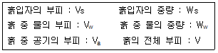
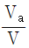
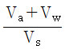
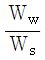
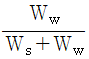
(정답률: 54%)
17. 다음 중 광속을 표시하는 단위는?
- lumen
- Candela/m2
- Candela
- lux
(정답률: 64%)
18. 건축의 생산수단으로서 사용되는 치수조정(modular coordination)의 장점이 아닌 것은?
- 설계 작업이 단순해진다.
- 공사시간을 단축할 수가 있다.
- 대량생산이 용이하여 생산비용이 절감된다.
- 치수비가 황금비로 되어 다양한 형태를 만들 수 있다.
(정답률: 70%)
19. 건조공기의 조성 중 질소(N2), 산소(O2) 다음으로 많은 성분은?
- 아르곤
- 탄산가스
- 네온
- 헬륨
(정답률: 59%)
20. 상점의 진열장에 관한 설명 중 옳지 않은 것은?
- 진열장의 크기는 상점의 종류와는 관계가 없다.
- 진열장의 바닥높이는 상품의 종류에 따라 다르다.
- 상점규모가 2, 3층인 경우, 진열장을 입체적으로 취급
- 진열장 내부의 밝기를 인공적으로 높게 함으로써 진열장의 반사를 방지할 수 있다.
(정답률: 69%)
2과목: 위생설비
21. 배수통기방식에 에어레타(aerator)를 이용하는 방식은?
- 소벤트(sovent)식
- 결합통기방식
- 루프통기방식
- 각개통기방식
(정답률: 53%)
22. 분뇨 정화조에의 유입수 BOD가 300mg/L이며, 방류수 BOD가 150mg/L일 때 BOD 제거율은?
- 40%
- 50%
- 60%
- 70%
(정답률: 67%)
23. 다음 중 배수트랩에 속하지 않는 것은?
- 드럼 트랩
- 관 트랩
- 디스크 트랩
- 사이폰 트랩
(정답률: 42%)
24. 다음 중 고가수조의 소용량화를 위한 설계시 가장 중요시 되는 것은?
- 시간평균예상급수량
- 순간최대예상급수량
- 1일 급수량
- 시간최대예상급수량
(정답률: 53%)
25. 다음의 급수방식에 관한 설명 중 옳지 않은 것은?
- 고가수조방식은 급수압력이 일정하다.
- 수도직결방식은 정전시에도 급수를 계속 할 수 있다.
- 초고층 건물은 적절한 수압을 유지하기 위해 급수조닝을 한다.
- 압력수조방식은 고장률이 낮으며 단수시에는 급수가 불가능하다.
(정답률: 56%)
26. 급탕설비에서 사용되는 팽창관에 대한 설명 중 옳지 않은 것은?
- 안전밸브와 같은 역할을 한다.
- 물의 온도상승에 따른 체적 팽창을 흡수한다.
- 가열장치로부터 배관을 입상하여 고가수조나 팽창탱크에 개방한다.
- 급탕장치내 압력이 초과되면 자동으로 밸브가 열린다.
(정답률: 35%)
27. 급수설비를 설계하는데 있어서 다음의 항목 중 가장 먼저 결정해야 될 사항은?
- 수도 인입관의 설계
- 수수조의 크기
- 급수관의 관경 결정
- 급수량의 산정
(정답률: 58%)
28. 옥내소화전설비의 시설기준에 관한 설명으로 옳지 않은 것은?
- 5층 건물의 각 층에 옥내소화전이 2개씩 설치된 경우 수원의 저수량은 5.2[m3]이상이다.
- 가압송수장치는 동결방지조치를 하거나 동결의 우려가 없는 장소에 설치한다.
- 지하층을 제외한 층수가 7층 이상으로 연면적이 2,000[m2]이상인 경우는 비상전원을 설치한다.
- 펌프가 수원의 수위보다 높은 위치에 있는 경우에는 유효수량이 1[L]이상되는 물올림 탱크를 설치한다.
(정답률: 58%)
29. 다음 중 강관 부속류와 사용 용도의 연결이 옳지 않은 것은?
- 소켓 - 구경이 다른 관을 접합할 때
- 엘보 - 관의 방향을 바꿀 때
- 티 - 관을 도중에서 분기할 때
- 유니온 - 직관을 접속할 때
(정답률: 64%)
30. 급탕방식 중 간접가열식에 대한 설명 중 옳지 않은 것은?
- 난방용 보일러의 열원을 이용할 수 있다.
- 가열코일을 내장하는 등 구조가 약간 복잡하다.
- 고압용 보일러를 설치할 필요는 없다.
- 직접가열식에 비해 열효율이 높다.
(정답률: 53%)
31. 다음의 각종 통기관에 대한 설명 중 옳지 않은 것은?
- 도피통기관은 각개통기방식에서 담당하는 기구수가 많은 경우 발생하는 하수가스를 도피시키기 위하여 통기수직관에 연결시킨 관이다.
- 신정통기관은 최상부의 배수수평관이 배수수직관에 접속된 위치보다도 더욱 위로 배수수직관을 끌어올려 대기 중에 개구하여 통기관으로 사용하는 부분이다.
- 결합통기관은 배수수직관내의 압력변화를 방지 또는 완화하기 위해 설치한다.
- 습통기관은 통기의 목적 외에 배수관으로도 이용되는 부분을 말한다.
(정답률: 36%)
32. 다음 중 봉수파괴 원인인 자기사이펀 작용을 방지하기 위한 방법으로 가장 알맞은 것은?
- 관트랩을 사용한다.
- 봉수 위에 기름층을 만든다.
- 트랩에 머리카락이나 걸레조각 등을 자주 청소해준다.
- 기구배수관 관경을 트랩구경보다 크게 하여 만류(滿流)가 되지 않도록 한다.
(정답률: 50%)
33. 어느 건물에 옥외소화전이 6개 설치되어 있다. 옥외소화전 설비의 수원의 저수량은 최소 얼마 이상이어야 하는가?
- 7m3
- 14m3
- 35m3
- 42m3
(정답률: 39%)
34. 캐비테이션 현상에 대한 대책으로 틀린 것은?
- 펌프의 설치위치를 낮게 하여 흡입양정을 적게 한다.
- 흡입배관의 마찰손실을 줄이기 위해 배관을 짧게 한다.
- 설계상의 펌프 운전범위내에서 항상 필요 NPSH가 유효 NPSH보다 크게 되도록 배관계획을 한다.
- 편흡입보다 양흡입 방식을 채택한다.
(정답률: 55%)
35. 웨버지수
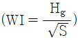
는 가스의 연소성을 판단하는데 중요한 수치이다. Hg가 의미하는 것은?- 단연지수
- 엔트로피
- 발열량
- 가스비중
(정답률: 60%)
36. 유체의 흐름에 있어서 유속, 유량을 각각 V, Q 라고 할 때 관경(d)을 구하는 식을 올바르게 나타낸 것은?
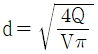
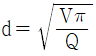
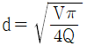
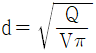
(정답률: 57%)
37. 배관의 마찰저항에 관한 설명 중 옳은 것은?
- 관의 길이에 반비례 한다.
- 관 내경의 제곱에 비례한다.
- 유체의 점성이 클수록 감소한다.
- 유속의 제곱에 비례한다.
(정답률: 59%)
38. 수도직결방식 급수설비에서 수도본관에서 1층에 설치된 샤워기까지의 높이가 2m이고, 마찰 손실압력이 20kPa, 수도본관의 수압이 150kPa 인 경우 샤워기 입구에서의 수압은? (단, 1mAq = 10kPa)
- 30 kPa
- 70 kPa
- 110 kPa
- 150 kPa
(정답률: 50%)
39. 급탕배관에 관한 설명 중 옳지 않은 것은?
- 상향배관인 경우 급탕관은 하향구배, 반탕관을 상향구배로 한다.
- 배관시공시 굴곡배관을 해야 할 경우에는 공기빼기밸브를 설치한다.
- 관의 신축을 고려하여 건물의 벽관통부분의 배관에는 슬리브를 끼운다.
- 중앙식 급탕설비는 원칙적으로 강제순환방식으로 한다.
(정답률: 53%)
40. 다음의 배수ㆍ통기 배관의 시공에 관한 설명 중 옳지 않은 것은?
- 배수수직관의 최하부에는 청소구를 설치한다.
- 배수수직관의 관경은 최하부부터 최상부까지 동일하게 한다.
- 간접배수계통의 통기관은 일반 통기계통에 접속시키지 않고 단독으로 대기 중에 대구한다.
- 통기관을 수평으로 설치하는 경우에는 그 층의 최고 위치에 있는 위생기구의 오버플로우면으로부터 100mm. 낮은 위치에서 수평 배관한다.
(정답률: 43%)
3과목: 공기조화설비
41. 다음 중 건축물에서 에너지 소비량을 줄이기 위한 방한으로 부적당한 것은?
- 열원기기의 대수분리를 고려한다.
- 필요환 기량을 충분히 고려한다.
- 단열을 강화한다.
- 조닝 계획을 효과적으로 한다.
(정답률: 56%)
42. 냉난방용 더트에 관한 설명 중 옳은 것은?
- 장방형덕트 대신 원형덕트를 사용하는 것은 관마찰 저항을 줄이기 위해서이다.
- 동일풍량에서 덕트크기를 중리면 팬 용량은 감소한다.
- 냉방용 코일에 냉각수보다 냉매를 사용하면 덕트크기를 줄일 수 있다.
- 원형덕트 대신 장방형덕트를 사용하는 것은 시공이 용이하기 때문이다.
(정답률: 66%)
43. 급기 덕트계통에 설계값인 풍량 6000m3/h, 정압 40mmAq, 축동력이 2kW인 송풍기를 설치한 후 덕트말단에서 풍량을 측정한 결과 5000/m3/h이었다. 이 덕트계에 설계 풍량을 급기하기 위해 송풍기의 모터를 교체할 경우 요구되는 축동력은? (단, 덕트계에 공기누설이 없고, 송풍기의 효율은 일정한 것으로 가정한다.)
- 2.0 kW
- 2.4 kW
- 2.88 kW
- 3.456 kW
(정답률: 38%)
44. 다음과 같은 특징을 갖는 보일러는?
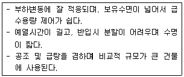
- 주철제 보일러
- 노통 연관보일러
- 수관보일러
- 관류보일러
(정답률: 53%)
45. 다음의 펌프에 관한 설명 중 옳지 않은 것은?
- 펌프설비에서 얻어지는 NPSH는 기압의 영향을 받는다.
- 펌프설비에서 얻어지는 NPSH는 흡입양정, 수온, 마찰 손실 등에 결정된다.
- 토오마의 캐비테이션계수는 비교회전수의 함수이다.
- 펌프설비에서 얻어지는 NPSH를 펌프가 필요로 하는 NPSH보다 작게 한다.
(정답률: 39%)
46. 온수난방과 비교한 증기난방의 특징으로 옳은 것은?
- 예열시간이 짧다.
- 소요방열면적과 배관경이 크므로 설비비가 높다.
- 부하변동에 따른 실내방열량의 제어가 용이하다.
- 한랭지에서 동결의 우려가 크다.
(정답률: 53%)
47. 다음 중 덕트 분기부에 설치하여 풍량의 분배를 하는데 사용되는 풍량조절 댐퍼는?
- 버터플라이 댐퍼
- 루버 댐퍼
- 스플릿 댐퍼
- 정품량 댐퍼
(정답률: 65%)
48. 다음 중 표준적인 단일덕트 정품량방식의 실내부하의 현열비(SHF) 선상에 있는 점이 아닌 것은?
- 실내 상태점
- 토출공기 상태점
- 코일출구 상태점
- 코일의 장치노점온도
(정답률: 45%)
49. 다음 중 송풍기가 내장된 방열기구는?
- 주철재 방열기
- 유니트 히터
- 베이스보드 히터
- 콘벡터
(정답률: 27%)
50. 다음의 덕트에서 (1)점의 풍속 V114/s, 정압 Ps1=50Pa, (2)점의 풍속 V2=6m/s, 정압 Ps2=100Pa일 때 (1), (2)점 간의 접압손실(Pa)은? (단, 공기의 밀도는 1.2kg/m3)
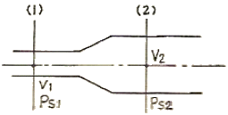
- 46
- 94
- 142
- 190
(정답률: 20%)
51. 배관재료의 일반적인 용도가 옳게 연결된 것은?
- 경질염화비닐관 - 냉매 배관
- 동관 - 증기 배관
- 스테인레스강관 - 급수 배관
- 폴리에틸렌관 - 가스 배관
(정답률: 29%)
52. 다음과 같은 조건에서 바닥면적이 600m2인 사무소 공간의 환기에 의한 외기부하는?
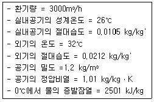
- 6.06 kW
- 26.76 kW
- 32.82 kW
- 59.58 kW
(정답률: 46%)
53. 다음의 배관 내 유속에 관한 설명 중 옳지 않은 것은?
- 관내에 흐르는 유속을 높이면 배관 내면의 부식이 심해진다.
- 관내에 흐르는 유속을 높이면 펌프의 소요동력이 증가한다.
- 냉각수의 배관 내 유속은 4m/s 정도로 하는 것이 가장 적당하다.
- 관내에 흐르는 유속이 너무 낮으면 배관 내에 혼입된 공기를 밀어내지 못하여 물의 흐름에 대한 저항이 커진다.
(정답률: 59%)
54. 유리창으로부터의 일사열 취득에 관한 설명 중 옳지 않은 것은?
- 유리의 면적이 클수록 취득열량이 많다.
- 투과율이 클수록 취득열량이 적다.
- 복층유리는 열관류율이 작다.
- 반사유리는 여름철 취득열량을 줄이는데 유리하다.
(정답률: 63%)
55. 다음 중 증기 트랩에 속하지 않는 것은?
- 벨 트랩
- 버킷 트랩
- 플로트 트랩
- 충격식 트랩
(정답률: 44%)
56. G[kg]의 물체를 온도 t1[℃]에서 t2[℃]까지 가열하는데 필요한 열량 Q를 구하는 식은? (단, Cm은 평균비열)
- Q=GㆍCm(t2+t1)
- Q=GㆍCm(t2-t1)
- Q=(G-Cm)(t2+t1)
- Q=(G-Cm)(t2-t1)
(정답률: 60%)
57. 판넬(panel)형 복사난방에 대한 설명으로 옳지 않은 것은?
- 실내바닥의 이용율이 높다.
- 실의 모양을 바꾸기 쉽다.
- 쾌적감이 높다.
- 외기침입이 있는 곳에서 난방감을 얻을 수 있다.
(정답률: 50%)
58. 실용적 3000m3, 재실자 350인의 집회실이 있다. 다음과 같은 조건에서 실내온도 t1=19℃로 하기 위한 필요 환기량은?
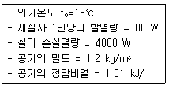
- 2400 m3/h
- 4950.50 m3/h
- 17821.8 m3/h
- 21600 m3/h
(정답률: 39%)
59. 지하역사의 경우 미세먼지(PM10)의 실내공기질 유지 기준은?
- 100 μg/m3 이하
- 150 μg/m3 이하
- 200 μg/m3 이하
- 250 μg/m3 이하
(정답률: 24%)
60. 냉동기에 관한 설명 중 옳지 않은 것은?
- 냉동기의 능력표시 단위로서 냉동톤이 이용되고 있다.
- 압축식 냉동기의 냉동 사이클은 압축→응축→팽창→증발의 순이다.
- 흡수식 냉동기는 압축식 냉동기에 비해 많은 전력을 소비한다.
- 흡수식 냉동기의 설치면적은 압축식 냉동기에 비해 크다.
(정답률: 43%)
4과목: 소방 및 전기설비
61. 전류가 흐를 때 빛이 나거나 열이 발생하는 현상의 근원이 되는 것은?
- 최외각 전자
- 자유 전자
- 대전자
- 도전율
(정답률: 36%)
62. 역률이 80[%]인 교류부하에 교류전압 3상 220[V]를 가하여 1[A]가 흘렀다. 이 때 부하의 전력은?
- 0.1 [kW]
- 0.3 [kW]
- 0.5 [kW]
- 1.0 [kW]
(정답률: 39%)
63. 직류 전원 전압이 10[V]인 회로에 직렬로 4[Ω], 6[Ω], 10[Ω]의 저항이 연결되어 있다. 이 회로에서 10[Ω]에 걸리는 전압 V1은?
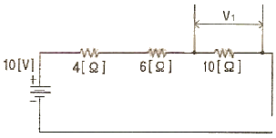
- 10[V]
- 5[V]
- 2.5[V]
- 7.5[V]
(정답률: 30%)
64. 다음 중 NAND Gate를 나타내는 것은?
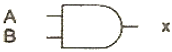
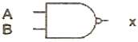
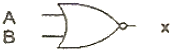
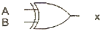
(정답률: 48%)
65. 다음 중 조명률에 영향을 끼치는 요소와 가장 거리가 먼 것은?
- 천장의 반사율
- 출입문의 위치
- 등기구의 배광
- 방의 크기
(정답률: 54%)
66. 3상 유도 전동기의 기동 방식 중 Y-△ 기동방식을 사용하는 목적은?
- 기동 전류를 줄이려고
- 기동 토크를 크게 하려고
- 기동시 회전을 빠르게 하려고
- 기동 전압을 높이려고
(정답률: 44%)
67. 전선의 굵기를 산정하는데 요구되는 결정 요소와 가장 거리가 먼 것은?
- 전선의 허용전류
- 전압강하
- 설비의 불평형율
- 전선의 기계적 강도
(정답률: 50%)
68. 유접점 시퀀스 제어 회로에 일반적인 특징에 대한 설명 중 옳지 않은 것은?
- 기계적 진동에 강하며 개폐부하의 용량이 작다.
- 소비전력이 비교적 크다.
- 독립된 다수의 출력회로를 동시에 얻을 수 있다.
- 전기적 노이즈(외란)에 대하여 안정적이다.
(정답률: 29%)
69. 다음의 통로유도등과 관련된 기준 내용 중 ()안에 알맞은 내용은?
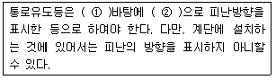
- ① 녹색, ② 백색
- ① 적색, ② 백색
- ① 백색, ② 녹색
- ① 적색, ② 녹색
(정답률: 38%)
70. 다음 설명 중 틀린 것은?
- 오옴의 법칙에 따르면 전압은 저항에 반비례한다.
- 온도의 상승에 따라 도체의 전기저항은 증가한다.
- 도선의 저항은 길이에 비례하고 단면적에 반비례한다.
- 전류가 누설되지 않도록 하는 것을 절연이라고 하며 그 재료를 절연물이라고 한다.
(정답률: 17%)
71. 다음 중 변압기의 와류손실을 감소시키기 위한 방법으로 가장 알맞은 것은?
- 성층 철심의 사용
- 1차 코일과 2차 코일의 분리
- 코일의 권수 변화
- 철심과 코일의 몰딩
(정답률: 43%)
72. 3상 △결선에서 상전류가 20[A]일 때 전선류는 얼마인가?
- 11.5 [A]
- 34.6 [A]
- 47.5 [A]
- 60 [A]
(정답률: 52%)
73. 전기식 자동제어시스템의 특징이 아닌 것은?
- 구조가 간단하고 조작 동력원으로 상용전원을 직접 사용한다.
- 중앙제어시스템을 구성하여 원격통신 제어가 용이하다.
- 전기회로의 조합에 의해 계장에 융통성이 있다.
- 검출부와 조절부가 하나의 케이스에 함께 설치된다.
(정답률: 24%)
74. 다음의 설명에 알맞은 법칙은?
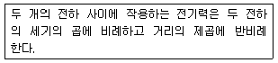
- 옴의 법칙
- 렌쯔의 법칙
- 키르히호프의 법칙
- 쿨룽의 법칙
(정답률: 45%)
75. 다음 중 전기설비가 얼마나 유효하게 사용되었는가를 나타내며 어떤 기간 중의 평균 수용 전력[kW]과 그 기간중의 최대 수용전력[kW]과의 비로 표시하는 것은?
- 수용율
- 부하율
- 부등율
- 설비율
(정답률: 53%)
76. 지중 전선로를 직접매설식에 의하여 시설하는 경우 매설깊이는 최소 얼마 이상으로 하여야 하는가? (단, 차량, 기타 중량물의 압력을 받을 우려가 있는 장소)
- 0.6 m
- 1.2 m
- 1.5 m
- 2.0 m
(정답률: 38%)
77. 20[Ω]의 저항 4개를 병렬로 연결하였다. 220[V]의 전원에 연결하면 몇 [W]의 전력을 소비하는가?
- 880
- 2420
- 4840
- 9680
(정답률: 29%)
78. 접지저감제의 구비조건이 아닌 것은?
- 전기적으로 부도체일 것
- 지속성이 있을 것
- 전극을 부식시키지 않을 것
- 토양을 오염시키지 않을 것
(정답률: 54%)
79. 다음 중 발전기실의 위치로 가장 적절치 않은 곳은?
- 기기의 반출입이 쉽고 운전보수면에서 편리한 곳
- 습도가 많으며 배기배출구와 떨어진 곳
- 급배수와 연료공급이 용이한 곳
- 부하의 중심이 되는 곳
(정답률: 43%)
80. 피드백 제어에서 제어요소는 무엇으로 구성되는가?
- 비교부와 조작부
- 비교부와 검출부
- 조절부와 조작부
- 검출부와 조작부
(정답률: 34%)
5과목: 건축설비관계법규
81. 외기에 직접 면하고 1층 또는 지상으로 연결된 출입문 중 방품구조로 하여야 하는 것은?
- 바닥면적이 200m2인 개별 점포의 출입문
- 공동주택의 출입문
- 사무소 건물의 출입문으로서 그 너비가 1.5m인 것
- 학교 건물의 출입문으로서 그 너비가 1.2m인 것
(정답률: 37%)
82. 피난설비 중 인명구조기구를 설치하여야 하는 대상 건축물은?
- 10층의 사무소
- 15층의 아파트
- 5층의 관괄호텔
- 5층의 병원
(정답률: 45%)
83. 다음 중 하수도법상 “분뇨”의 정의로 알맞은 것은?
- 수거식 화장실에서 수거되는 액체성 또는 고체성의 오염물질
- 수세식 화장실에서 수거되는 액체성 또는 고체성의 오염물질
- 개인화장실에서 수거되는 액체성 또는 고체성의 오염물질
- 공중화장실에서 수거되는 액체성 또는 고체성의 오염물질
(정답률: 36%)
84. 다음 중 건축법령상 아파트의 정의에 관한 기준 내용으로 옳은 것은?
- 주택으로 쓰는 층수가 3개 층 이상인 주택
- 주택으로 쓰는 층수가 5개 층 이상인 주택
- 주택으로 쓰는 층수가 7개 층 이상인 주택
- 주택으로 쓰는 층수가 9개 층 이상인 주택
(정답률: 53%)
85. 다음 중 지하층의 비상탈출구와 관련된 기준 내용으로 옳지 않은 것은?
- 비상탈출구의 문은 피난방향으로 열리도록 할 것
- 비상탈출구의 유효너비는 0.75m 이상으로 하고, 유효높이는 1.5m 이상으로 할 것
- 비상탈출구는 출입로부터 3m 이상 떨어진 곳에 설치 할 것
- 비상탈출구에서 피난층 또는 지상으로 통하는 복도나 직통계단까지 이르는 피난통로의 유효너비는 0.9m 이상으로 할 것
(정답률: 15%)
86. 다음 중 방화구획의 설치와 관련된 기준 내용으로 옳지 않은 것은?
- 10층 이하의 층은 바닥면적 1천제곱미터 이내마다 구획할 것
- 3층 이상의 층과 지하층은 층마다 구획 할 것
- 11층 이상의 층은 바닥면적 200제곱미터 이내마다 구획할 것
- 11층 이상의 층으로 벽 및 반자의 실내에 접하는 부분의 마감을 불연재료로 한 경우에는 바닥면적 600제곱미터 이내마다 구획할 것
(정답률: 37%)
87. 특정소방대상물이 지하가 중 터널인 경우, 옥내소화전 설비를 설치하여야 하는 길이 기준은?
- 500m 이상
- 1,000m 이상
- 1,500m 이상
- 2,000m 이상
(정답률: 50%)
88. 바닥으로부터 높이 1m 까지의 안벽의 마감을 내수재료로 하여야 하는 대상건축물이 아닌 것은?
- 제1종 근린생활시설중 휴게음식점의 조리장
- 제2종 근린생활시설중 휴게음식점의 조리장
- 단독주택의 욕실
- 제2종 근린생활시설중 일반음식점의 조리장
(정답률: 63%)
89. 방화구조의 기준 내용으로 옳지 않은 것은?
- 철망모르타르로서 그 바름두께가 2센티미터 이상인 것
- 시멘트모르타르위에 타일을 붙인 것으로서 그 두께의 합계가 2센티미터 이상인 것
- 두께 1.2센티미터 이상의 석고판 위에 석면시멘트판을 붙인 것
- 심벽에 흙으로 맞벽치기 한 것
(정답률: 36%)
90. 의료시설의 병실 간의 칸막이벽은 소리를 차단하는데 장애가 되는 부분이 없도록 하여야 한다. 이와 관련된 칸막이 벽의 구조 기준 내용으로 옳지 않은 것은?
- 철골철근콘크리트조로서 두께가 10cm 이상인 것
- 콘크리트블록조로서 두께가 19cm 이상인 것
- 철근콘크리트조로서 두께가 10cm 이상인 것
- 벽돌조로서 두께가 10cm 이상인 것
(정답률: 64%)
91. 다음 중 방염성능기준 이상의 실내장식물 등을 설치하여야 하는 특정소방대상물에 해당되지 않는 것은?
- 종합병원
- 헬스클럽장
- 특수목욕장
- 수영장
(정답률: 50%)
92. 건축물의 열손실방지와 관련하여 다음의 건축물의 부위 중 열관류율 기준이 가장 작은 곳은? (단, 중부지역)
- 거실의 외벽(외기에 직접 면하는 경우)
- 최상층에 있는 거실의 반자(외기에 직접 면하는 경우)
- 공동주택의 측벽
- 공동주택의 창(외기에 직접 면하는 경우)
(정답률: 28%)
93. 건축물의 냉방설비에 대한 설치 및 설계기준에 정의된 축냉식 전기냉방설비의 구분에 속하지 않는 것은?
- 빙축열식 냉방설비
- 수출열식 냉방설비
- 잠열축열식 냉방설비
- 지열식 냉방설비
(정답률: 31%)
94. 관련 규정에 의하여 건축물의 출입구에 설치하는 회전문은 계단이나 에스컬레이터로부터 최소 얼마 이상의 거리를 두어야 하는가?
- 1.0m
- 1.5m
- 2.0m
- 2.5m
(정답률: 69%)
95. 문화 및 집회시설 중 공연장의 개별관람석의 출구에 관한 기준 내용으로 옳지 않은 것은? (단, 개별관람석의 바닥면적은 300m2 임)
- 관람석별로 2개소 이상 설치할 것
- 각 출구의 유료너비는 1.5m 이상일 것
- 관람석으로부터 바깥쪽으로의 출구로 쓰이는 문은 안여닫이로 할 것
- 개별관람석 출구의 유효너비의 합계는 개별관람석의 바닥면적 100m2마다 0.6m의 비율로 산정한 너비 이상으로 할 것
(정답률: 42%)
96. 거실의 용도에 따른 조도기준으로 옳지 않은 것은? (단, 바닥에서 85센티미터의 높이에 있는 수평면의 조도)
- 독서, 식사, 조리 - 150룩스 이상
- 설계, 제도, 계산 - 500룩스 이상
- 검사, 수술, 시험 - 700룩스 이상
- 오락일반 - 150룩스 이상
(정답률: 50%)
97. 건축물의 용도변경시 허가 대상에 속하는 것은?
- 위락시설에서 발전시설로의 용도변경
- 교육연구시설에서 업무시설로의 용도변경
- 문화 및 집회시설에서 판매시설로의 용도변경
- 제1종 근린생활시설에서 업무시설로의 용도변경
(정답률: 14%)
98. 다음의 무창층에 대한 설명 중 밑줄 친 일정 요건과 관련된 기준 내용으로 옳지 않은 것은?
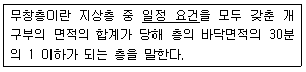
- 개구부는 도로 또는 차량이 집입할 수 있는 빈터를 향할 것
- 개구부의 크기가 지름 50센티미터 이상의 원이 내접할 수 있을 것
- 내부 또는 외부에서 파괴 또는 개방할 수 없을 것
- 해당 층의 바닥면으로부터 개구부 밑부분까지의 높이가 1.2미터 이내일 것
(정답률: 48%)
99. 일반적으로 비상결보설비를 설치하여야 할 특정소방대살물의 연면적 기준은?
- 400m2 이상
- 600m2 이상
- 1,500m2 이상
- 3,500m2 이상
(정답률: 39%)
100. 에너지절약계획서 작성에 따른 에너지성능지표 검토서의 적합판정기준으로 맞는 것은?
- 평점합계 60점 이상
- 평점합계 65점 이상
- 평점합계 70점 이상
- 평점합계 80점 이상
(정답률: 37%)